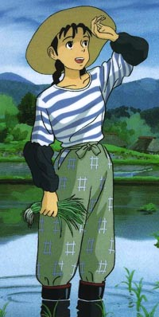
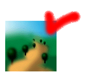

일하는 소녀 :
아~! 여기 들어오지 말아요. 밟으면 농작물이 죽는다고요.
여기는 우리 마을의 밭이에요. 무슨 일로 오셨나요 ?
아무 일도 없으시다면, 일 좀 도와주시고 가실래요 ? 이 곳 일이 좀 많아서요.
이게 다 뭐냐구요 ? 촌장님이 심어 놓은 것들이에요.
촌장님의 취미중 하나가 글쓰기거든요. 작품이라 할만한 것도 없지만,
딴에는 열심히 쓰더군요.
근데 워낙 게을러서요. 글을 쓰는것도 무지하게 더디 걸려요.
아, 생각난게 있어요.
지금 여기에는 소설 밖에 없지만요. 옆쪽 밭에 가보면, 시도 있어요.

<<=시 밭 가는길-
저희 작물들을 한번 보세요.
분류
단편소설
아이들의 작은이야기
중학생 꼬마들의 사랑이야기.
촌장님이 최초로 쓴 소설이죠.
은 하 계
21C 아이들의 사랑이야기, Sf
약간 기독교적 분위기도.. 두번째로 쓴거죠.
꿈을 실은 비행기
비행 우편 배달부 노인의 추억 생각
전쟁의 아름다운이야기
전쟁속의 비정상적인 인간상
추천작
푸른하늘을 위하여
핵전쟁이후의 황폐함.. 그 책임은 누구에게..
그 책임은 우리 자신에게 돌아올지 모른다.
유리구슬 이야기
황순원씨의 소나기와 비슷한 분위기의 맑은 사랑이야기
촌장님이 소나기를 생각하고 쓴거래 요.
노래하는 나무(1)
노래하는 나무(2)
전쟁 때문에 뒤틀려 버린 인생을 지녔던 평범 한 소녀의 이야기
추 천 작
환타지 실험작
컬트식 환타지 물
어른들을 위한동화(1)
아직 다 안 썼어요. 푸른하늘을 위하여와 비슷한 모티브인데
회 상
터보의 회상을 듣고 썼습니다.
모티브가 노래라, 창작물이라서 제 작품이라고 부르기가 뭣하네요.
제가 처음 쓴 장편입니다.. 정통 환타지물 이고요.
삽화도 마을 담벼락에 몇개 그려져 있을겁니다.
드라고니아의 전설 마법계보
장편소설
드라고니아의 전설(1)
드라고니아의 전설(2)
드라고니아의 전설(3)
드라고니아의 전설(4)
드라고니아의 전설(5)
드라고니아의 전설(6)
드라고니아의 전설(7)
드라고니아의 전설(8)
드라고니아의 전설(9)
드라고니아의 전설(10)
드라고니아의 전설(11)
드라고니아의 전설(12)
드라고니아의 전설(13)
드라고니아의 전설(14)
드라고니아의 전설(15)
드라고니아의 전설(16)
드라고니아의 전설(17)
드라고니아의 전설(18)
드라고니아의 전설(19)
드라고니아의 전설(20)
드라고니아의 전설(21)
드라고니아의 전설(22)
드라고니아의 전설(23)
드라고니아의 전설(24)
드라고니아의 전설(25)
드라고니아의 전설(26)
드라고니아의 전설(27)
드라고니아의 전설(28)
드라고니아의 전설(29)
드라고니아의 전설(30)
드라고니아의 전설(31)
드라고니아의 전설(32)
드라고니아의 전설(33)
드라고니아의 전설(34)
드라고니아의 전설(35)
드라고니아의 전설(36)
드라고니아의 전설(37)
드라고니아의 전설(38)
드라고니아의 전설(39)
드라고니아의 전설(40)
가볍게 쓴 글입니다. 요즘은 귀찮아서 안쓰고 있지만요.
장편소설
작은마녀 윈디(1)
작은마녀 윈디(2)
작은마녀 윈디(3)
작은마녀 윈디(4)
작은마녀 윈디(5)
작은마녀 윈디(6)